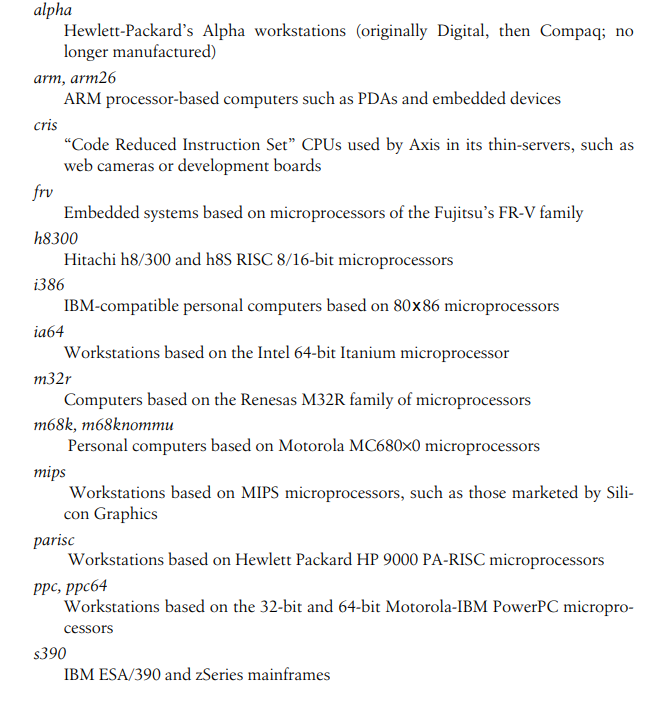
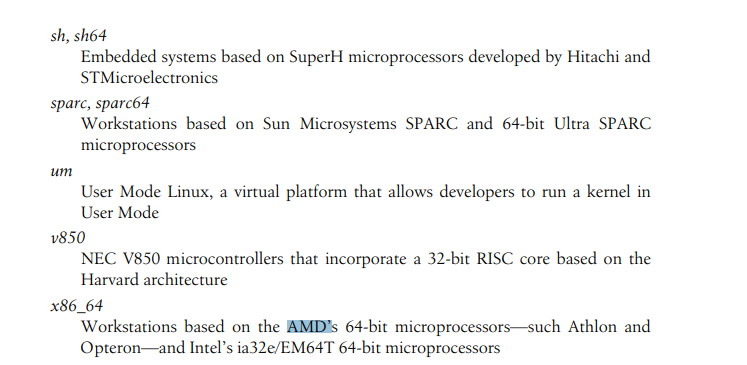
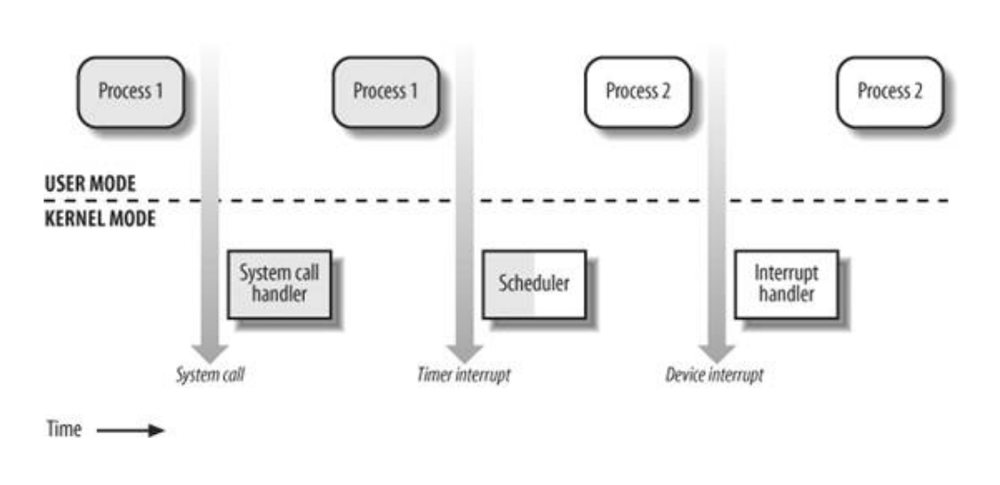
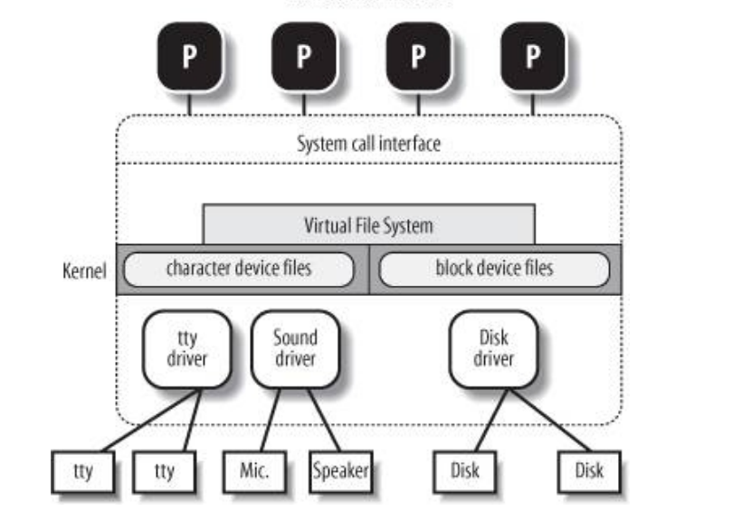

Linux操作系统是众多类Unix操作系统的一员。其他类Unix操作系统有System V Release 4 (SVR4),AT&T开发的，4.4 Berkeley BSD， Digital UNIX from Digital Equipment Corporation (now Hewlett-Packard)，AIX from IBM，HP-UX from Hewlett-Packard，Solaris from Sun Microsystems，Mac OS X from Apple 。以上这些都是商业操作系统，源码不开放，要钱的。 还有一些同Linux一样开放源码的操作系统，比如FreeBSD,NetBSD,OpenBSD.
Linux最早是Linus Torvalds在1991年开发的，是在一台IBM-compatible personal computers 上开发的，其处理器是intel 80386.如今，Linux已经支持众多的体系架构了，比如AMD64,PowerPC,HP Alpha,Inter Itanium, IBM zSeries.
Linux最大的好处是开放源码。其源码的许可是GNU GPL, GNU project 是Free Software Foundation, Inc. 组织的，其目的是实现一个完整的，免费的操作系统。GNU C compiler的实现，对于Linux的成功至关重要
从技术的调度讲，Linux是个类Unix内核，而不是完整的类Unix操作系统，最主要的，是其并不包括Unix应用， 比如文件系统的应用，窗口系统，图形桌面，系统管理工具，文件编辑工具，编译器等等。然而这些应用都是可以免费安装的。
正因为Linux还需要安装这么多的工具之后，才能提供一个完整可用的操作系统环境，现在市面上也因此有很多Linux商业版，这些商业版通常将Linux 内核代码放在/usr/src/linux这个文件夹下。
当我们只提到Linux时，通常所指的是Linux内核
Linux Versus Other Unix-Like Kernels
所有的商业版类Unix操作系统，要么起源于 SVR4,要么起源于4.4BSD,都符合一些通用协议，比如IEEE's Portable Operating Systems based on Unix (POSIX)，X/Open's Common Applications Environment (CAE). Linux内核2.6版本符合IEEE POSIX标准，因此，大多数Unix 应用都能在Linux系统上安装运行，通常只需要很少或者不需要修改或打补丁。此外，Linux实现了所有的当前Unix系统的features,比如virtual memory，virtual filesystem，lightweight processes，Unix signals，SVR4 interprocess communications，support for Symmetric Multiprocessor (SMP) systems等等。 以下列举了Linux与其他商业Unix系统的不同之处：
整体式的内核(Monolithic kernel)
大部分类Unix操作系统都是Monolithic kernel，但也有例外，比如Max OS X，是 microkernel（微内核） ( Mac OS is not based on a microkernel. It uses a hybrid kernel called XNU which stands for "X is Not Unix". This kernel was created by Apple and it's a combination of the Mach microkernel and elements from the FreeBSD operating system, along with some other components, so it's not a pure microkernel.) (the XNU kernel used by MacOS is not a pure monolithic kernel like Linux. It is a hybrid kernel, incorporating elements of both microkernel and monolithic kernel designs. The Mach component of XNU provides features typically associated with microkernels, such as message passing and task isolation, while the FreeBSD component provides features common to monolithic kernels, such as device drivers and file systems.)
模块的支持。
Linux部分内核代码是可以动态加载和卸载的，尤其是驱动代码，这部分代码叫模块代码。而其他的众多商业Unix操作系统中，只有 SVR4.2和Solaris支持这一特性。
内核线程。
Linux只有很少的一些内核线程，每隔一段时间会执行一些内核函数。
多线程程序支持
Linux对LWP的实现与其他Unix系统不同，其他Unix系统实现的用户线程是基于内核线程实现的，而Linux实现的LWP实际上与进程一样，有基本的执行上下文,通过非标准的clone系统调用实现线程。
抢占式内核Preemptive kernel
当Linux内核在编译时，开启了"Preemptible Kernel" 选项，即使当前的指令流处在privileged mode下，也可以被打断，切换到别的执行流执行。只有很少的其他Unix操作系统支持这一特性。
多处理器的支持。
Linux支持SMP,内存模型可以是UMA,也可以是NUMA.
文件系统
Linux实现了虚拟文件系统，因此可以支持各种文件系统，比如ext3,ext2,各种日志文件系统，等等。
STREAMS
Linux没有实现类似STREAMS I/O subsystem.
Hardware Dependency
linux支持运行在各种不同的硬件平台上，内核源码中，每个硬件平台独立的代码在arch 和include目录的23个子目录下。这些硬件平台包括


Linux Versions
ulk,3rd edition refers to linux version 2.6.11
Basic Operating System Concepts
操作系统通常包括内核和一些用户程序，内核是至关重要的。 内核的目标有两个
- 和硬件交互，为各种可编程的底层硬件服务。
- 为用户程序提供可运行的环境。
一些操作系统允许用户程序直接访问底层硬件，比如MS-DOS，而类Unix操作系统对用户程序隐藏底层硬件的细节。当程序需要使用硬件资源时，它需要向操作系统发起请求，操作系统评估该请求，如果被允许，则会代替用户程序访问该硬件。 为了加强这一机制，操作系统依赖于硬件的某些特性来禁止用户程序直接与底层硬件打交道，或者访问任意位置的内存。cpu有至少两种执行模式，非特权模式和特权模式。Unix叫这两种模式为User Mode 和Kernel Mode .
Multiuser Systems
多用户操作系统是指计算机可以同时独立运行多个用户的程序。同时运行的程序需要竞争多个资源，比如CPU,memory,hard disk等等。独立指的是程序之间互不干扰。运行程序的切换会延长程序的运行时间，影响响应时间。现在操作系统之所以设计的这么复杂，很大程序上就是要尽量降低延迟，减少响应时间。 多用户操作系统必须提供以下功能:
- 认证用户身份的认证机制
- 有问题的用户程序不能阻塞其他程序的运行，需要提供保护机制
- 恶意的用户程序不能干扰或者监视其他用户程序的运行或者用户的活动，需要保护机制
- 每个用户程序能使用的资源需要可以被限制，需要对资源使用的计数机制。
这些机制的实现，离不开硬件的保护，这里指的是cpu的运行模式。如果用户进程可以直接访问硬件，则可以绕过操作系统提供的这些保护机制。
Users and Groups
在多用户操作系统中，每个用户都有自己的私人空间，比如一块磁盘空间来存储文件，收发私人邮件等等。 操作系统必须保证一个用户的私人空间只能被该用户访问。尤其是，它必须保证，其他恶意用户，无法通过系统程序，来侵犯别的用户的空间。
所有的用户都有唯一的ID,UID。当某个用户需要访问计算机时，系统要求用户输入login name和密码做用户认证。
每个用户都会属于某一用户组，同一用户组的用户之间可以共享文件等资源。用户组由用户组ID,GID来标识。每个文件最多属于一个用户组。比如，某个文件，其所属用户可读写，用户组成员可读，而其他用户则无法访问该文件。
所有的类Unix系统都有超级用户，root.root可以管理用户账户，执行维护任务，比如系统备份，程序更新等等。 root用户可以做几乎任何事，因为操作系统不会对root用户适用保护机制。尤其是，root用户可以访问系统中所有的文件，操作所有正在运行的用户进程
Processes
所有的操作系统都需要实现一个最基础的抽象概念：进程。进程的定义有两种：程序的运行时实例，或者，运行程序的执行上下文（execution context)。 在传统的操作系统中，一个进程在一块地址空间中依次执行一个指令序列。地址空间指的是该进程可访问的内存空间。 现代操作系统，一个进程内可有多个执行流，也就是在同一个地址空间内存在多个指令序列。 多用户操作系统中，多个进程可同时运行，竞争系统资源，主要是CPU资源。 多个进程可同时运行的系统又叫做multiprogramming或者 multiprocessing系统。 需要注意的是，有些系统是multiprocessing的，但不是multiuser的，比如Windows 98
进程与程序的区分很重要。多个进程可运行同一个程序。而一个进程也可依次执行多个程序。
在单处理器计算机中，任意时刻只能有一个进程在cpu上运行。即使是多处理器，cpu的数量也是受限制的，而可同时运行的进程数量是远远多于cpu数量的，因此操作系统必须能够调度进程的运行，该功能由内核的调度器实现。 有些系统只支持不可抢占的进程运行，意味着一个进程一旦获得cpu运行后，必须等到它主动释放cpu资源，调度器才能调度别的进程运行。但是多用户系统的进程必须是可抢占的，操作系统跟踪每个进程的运行时间，每隔一段时间就会激活调度器调度别的进程运行。
Unix is a multiprocessing operating system with preemptable processes .
即使没有用户登录，没有用户进程在运行，也会有几个系统进程在监听着外部设备，尤其是监听着系统终端，等待用户登录。当用户输入登录名字，监听进程会运行一个验证用户密码的程序。如果用户验证通过，该进程则会创建一个新的进程，运行shell程序。当用户输入命令后，shell进程会创建新的进程运行该命令程序。
Kernel Architecture
大多数Unix操作系统都是monolithic kernel,也就是所有的内核功能模块都在内核程序中，被编译成一个完整的内核image，在启动时被加载运行。在系统运行过程中，内核要么在process context下，在内核空间中，执行与系统调用相关的内核代码，要么在interrupt context下，在内核空间中，执行与中断相关的内核代码。 与之相对应的是微内核，microkernel。微内核只需要内核提供很少的功能，通常包括一些同步原语，简单的调度器，ipc机制等。一些系统进程运行在微内核之上，实现其他的操作系统级的功能，比如内存分配，设备驱动，系统调用处理等。
微内核相对于整块的内核而言，是要慢一些的。因为微内核各层之间的信息传递消耗。不过微内核也有一些理论上的优势，如下
- 首先，微内核操作系统对RAM能更有效的使用。因为那些暂时不需要的系统进程可以被swapped out或者destroyed。
- 其实，微内核是模块化的，在微内核操作系统上开发的用户程序，天然也是模块化的
- 微内核的可移植性，相比于一整块的内核，移植到别的架构上，要容易一些。因为跟硬件相关的内核代码，也是模块化的。
Linux 内核提供了模块。一个模块是一个目标文件，可在运行时被连接到内核。可以被动态的加载和卸载。模块代码通常包括文件系统，设备驱动等的功能实现。Linux模块不同于微内核的进程，没有消息传递的开销。
An Overview of the Unix Filesystem
Files
Unix 文件是包含信息的字节序列。内核不会翻译文件的内容。从用户的角度看，文件被组织在树结构下，如图
 该树的所有节点，除了页节点，都是目录名。
文件名和目录名可包括任意的ASCII字符，除了
该树的所有节点，除了页节点，都是目录名。
文件名和目录名可包括任意的ASCII字符，除了/和null字符\0。
每个进程都有当前工作目录，属于该进程的执行上下文。
当进程需要访问某个文件时，需要文件的pathname,如果pathname以根目录开头，为绝对路径。如果是以文件或者目录开头，则为相对路径，开始点是进程的当前工作目录。
Hard and Soft Links
目录中的文件名叫做文件的hard link，或者叫做link. 同一个文件可在一个目录中有多个连接，只要连接名不同。或者在多个目录中有连接。所以一个文件可以有多个文件名。
unix 命令$ ln p1 p2为p1所指向的文件创建新的硬链接p2。
硬链接的限制
- 目录无法创建硬链接。目录的硬链接可能会使目录树结构有环，从而导致一个文件会存在无数的文件名。
- 硬链接只能在相同的文件系统中创建。因为unix 系统可同时在不同的目录节点挂在不同的文件系统，这些文件系统会处于不同的磁盘分区，或者不同的磁盘中。而不同的文件系统，对目录和文件的实现可能都各不相同。
软连接避开了这些限制 软连接是一个很短的文件，其中包括任意文件系统中的任意文件或目录的pathname,甚至可能指向不存在的文件。
unix命令$ ln -s p1 p2创建p1的软连接。p1和p2都是pathname,文件系统首先提取pathname p2的目录部分，在该目录下创建一个新的类型为符号链接的文件，该目录项的名字为pathname p2的名字部分，该文件的内容为pathname p1。对p2的访问，最后都会访问到p1
File Types
- Regular file
- Directory
- Symbolic link
- Block-oriented device file
- Character-oriented device file
- Pipe and named pipe (also called FIFO)
- Socket
File Descriptor and Inode
在Unix系统中，文件的内容和文件的控制信息是明确区分开的。除了设备文件和某些特殊文件系统的文件(比如sysfs)，所有的文件内容都只包括字节流。文件内容不包括文件的控制信息。所有的控制信息另外存储在一个叫inode的数据结构中。每个文件都有一个对应的inode.
inode通常包含的信息有:
- 文件类型
- 文件的硬链接数量
- 文件内容长度
- 设备ID (i.e., an identifier of the device containing the file)
- inode number
- UID of the file owner
- User group ID of the file owner
- Several timestamps that specify the inode status change time, the last access time, and the last modify time
- Access rights
Access Rights
一个文件的潜在使用者分为以下3类:
- The user who is the owner of the file
- The users who belong to the same group as the owner, not including the owner
- All remaining users (others)
There are three types of access rights -- read, write, and execute for each of these three classes. Thus, the set of access rights associated with a file consists of nine different binary flags. 此外还有3个flags，suid(set user id),sgid(set group id),sticky，可应用在可执行文件上：
- suid,sgid ：详见 ulk chapter 20
- sticky: An executable file with the sticky flag set corresponds to a request to the kernel to keep the program in memory after its execution terminates.This flag has become obsolete; other approaches based on sharing of code pages are now used
When a file is created by a process, its owner ID is the UID of the process. Its owner user group ID can be either the process group ID of the creator process or the user group ID of the parent directory, depending on the value of the sgid flag of the parent directory.
File-Handling System Calls
Unix操作系统定义了以下与文件操作相关的系统调用：
- 打开文件
fd = open(path, flag, mode)
path:Denotes the pathname (relative or absolute) of the file to be opened
flag:Specifies how the file must be opened (e.g., read, write, read/write, append). It also can specify whether a nonexisting file should be created.
mode: Specifies the access rights of a newly created file.
这个系统调用会创建一个"open file"object,并且返回指向该object的identifier，叫做file descriptor(fd),一个打开文件对象通常包括：
- 一些跟文件处理相关的数据结构，比如such as a set of flags specifying how the file has been opened，an offset field that denotes the current position in the file from which the next operation will take place(the so-called file pointer), and so on.
- Some pointers to kernel functions that the process can invoke. The set of permitted functions depends on the value of the flag parameter.
文件的inode number
跟打开文件对象相关的属性
- 一个进程所有打开文件用打开文件表表示，其中包括fd和指向的open file object.
- 一个进程的多个fd可以指向同一个open file object(多次打开同一个文件？)
- 多个进程可同时打开同一个文件，每个进程会创建单独的属于每次进程自己的fd和open file object。操作系统不提供对同一个文件并发I/O的同步，用户程序可调用flock()文件锁做同步。
- 子进程在被创建时，拷贝父进程的打开文件表，其中的fd指向的是同一个open file object
- 创建线程时，共享打开文件表。
To create a new file, the process also may invoke the creat( ) system call, which is handled by the kernel exactly like open( ).
- 访问打开的文件
普通文件可被随机访问或顺序访问，而设备文件和管道文件只能被顺序访问。无论是哪一种访问方式，内核都会在open file object中存储file pointer,the current position at which the next read or write operation will take place. Sequential access is implicitly assumed: the read( ) and write( ) system calls always refer to the position of the current file pointer. To modify the value, a program must explicitly invoke the lseek( ) system call. When a file is opened, the kernel sets the file pointer to the position of the first byte in the file(offset 0),当然如果打开文件的flag中设置了append标志，则position肯定指在文件末尾后。
lseek：newoffset = lseek(fd, offset, whence);
fd:Indicates the file descriptor of the opened file
offset:Specifies a signed integer value that will be used for computing the new position of the file pointer
whence:Specifies whether the new position should be computed by adding the offset value to the number 0(offset from the beginning of the file), the current file pointer, or the position of the last byte (offset from the end of the file)
read：nread = read(fd, buf, count);
buf:Specifies the address of the buffer in the process's address space to which the data will be transferred
count:Denotes the number of bytes to read
- 关闭文件
res = close(fd);
releases the open file object corresponding to the file descriptor fd. When a process terminates, the kernel closes all its remaining opened files 当然，对open file object的释放要考虑到引用计数的问题。
- 重命名和删除文件
To rename or delete a file, a process does not need to open it. Indeed, such operations do not act on the contents of the affected file, but rather on the contents of one or more directories. For example, the system call:
res = rename(oldpath, newpath)
changes the name of a file link, while the system call:
res = unlink(pathname);
decreases the file link count and removes the corresponding directory entry. The file is deleted only when the link count assumes the value 0. link count存储在inode中。
An Overview of Unix Kernels
The Process/Kernel Mode
CPU可运行在User Mode或者Kernel Mode这两种状态下。有些cpu有不止两种运行状态，比如80x86,有4种。但所有的unix内核只需要user mode 和 kernel mode这两种。 cpu提供特殊的指令可从这两种模式之间切换。通常，只在用户进程需要请求内核服务时，比如调用系统调用时，会从user mode切换到kernel mode,内核完成用户请求，返回用户空间之前，会切换回user mode.
除了用户进程，Unix 系统也包括一些 privileged processes,叫做kernel threads.
- They run in Kernel Mode in the kernel address space.
- They do not interact with users, and thus do not require terminal devices.
- They are usually created during system startup and remain alive until the system is shut down.
在单处理器系统中，任意时刻只有一个进程在运行，它可能运行在user mode,也可能运行在kernel mode。如果运行在kernel mode,是在运行一些内核routine。下图展示了进程在user mode和kernel mode两种状态切换的例子。 进程1在开始在user mode 下运行，请求系统调用，切换到kernel mode, 调用system handler routine处理系统调用，然后切换回user mode继续运行，然后一个时钟中断发生，切换到kernel mode,调用中断处理routine，时钟中断的处理，会检查当前是否需要做进程切换，如果需要，给当前进程设置need_resched标志，表示当前进程需要放弃cpu。在从系统调用的返回路径上，会检查当前进程是否被设置了need_resched标志，如果设置了，调用scheduler()函数调度别的进程运行，这里调度了process 2,发生了进程切换，被调度的process 2最终在用户态下运行，直到又发生了外设中断，切换到kernel mode继续运行相应的中断处理例程。

需要注意的是，在进程从内核地址空间返回用户地址空间之前，在返回路径上，总是检查进程的need_resched标志，是否需要做进程调度，如果设置了，则调用scheduler()函数。这叫做user preemption。
除此之外还有kernel preemption,也就是即使当前是kernel的代码在运行，也会发生抢占。比如kernel在执行系统调用代码，系统调用的执行期间可发生中断，中断处理完返回内核空间后，也会做调度检查。
user Preemption 当从内核空间返回用户空间，都会检查need_resched flag,如果设置了，会调用schedule(),这种preemption 叫做user preemption. 这些返回路径代码是architecture-dependent，定义在entry.S中。
kernel Preemption linux内核从2.6版本开始，支持kernel的抢占，即使当前进程运行在内核态，也是可被抢占的，只要kernel所处的状态is safe to reschedule.
当当前进程没有hold a lock时，即使其处于内核态，也是可以被抢占的。thread_info中的preempt_count 计数其当前持有的锁数量。当preempt_count为0时，当前task是抢占安全的。
- 当从interrupt_handler返回到 kernel space,如果need_resched标志设置了，并且preempt_count为0，系统会调用schudule()。
- 当preempt_count减为0时，表示现在可安全被调度，这时内核会检查need_resched是否被设置了，如果设置了，会调用schedule().
- 内核代码显示调用schedule(),比如内核态的进程在执行内核代码时阻塞了，会将自己放入等待队列中并显示调用schedule().
另一个需要关注的问题是，当执行流从用户态切换到内核态，其执行上下文的切换问题。如果是系统调用，其context并不会发生切换，还是处于process context之下。如果是中断，则之前的cpu执行上下文需要被保存，切换到interrupt context下，以便在中断完成后恢复。因为本质上，系统调用是同步执行流，只是需要陷入内核调用内核代码。而interrupt context与当前的进程毫无关系。
interrupt context与process context这两种context，其执行流最大的区别就是，interrupt context必须执行的很快，执行流不能休眠
中断处理例程可被嵌入，也就是，即使当前cpu正在处理中断处理流，也会发生中断，转而去处理另一个中断处理流。中断会发生在任意时间。如果是嵌入的中断处理完毕，返回之前的中断，这个中断返回，是不会发生调度的。因为其preempt count肯定不会为零
kernel routines在以下几种情况下会被运行
- 进程发起系统调用
- cpu正在处理的进程发生了异常，比如无效的指令，page fault，异常处理是内核的任务
- 外设发出了中断，需要内核的中断处理例程处理
- kernel thread
Process Implementation
内核通过进程描述符管理进程，进程描述符中包括进程的当前状态信息。 当内核需要暂停某个进程的运行时，他会存储处理器当前的寄存器数据到进程描述符中，包括
- 指令寄存器，栈寄存器
- 通用寄存器
- 浮点数寄存器
- cpu控制寄存器，存储cpu状态字
- 存储当前进程的最顶层虚地址表的地址的寄存器
而当内核需要恢复该进程的运行时，就将保存在进程描述符中的寄存器的数据恢复到相应的cpu寄存器中。
如果进程在等待某个事件的发生，其进程描述符被挂载在该事件的等待队列上
Reentrant Kernels
所有的Unix内核都是可重入的。这意味着可以有多个进程同时执行在内核态。当然，如果是单处理器系统，只有一个进程可在cpu上运行，其他的阻塞在内核态，可能等待cpu资源，可能等待I/O的完成。
实现内核可重入性的一个方法是，所有的内核函数都只修改本地变量，不会修改任何全局数据。这样的函数叫可重入函数。然而内核不止包括可重入函数，也包括非可重入函数，对非可重入函数的处理，需要引入锁机制，来确保任意时刻只会有一个进程正在执行非可重入函数。
当硬件中断发生时，可重入内核可快速停止当前进程的运行，即使该进程正处在内核态，以此快速相应中断。 对中断的快速相应是非常重要的，当设备发出中断后，它需要等待cpu确认该中断，才能继续处理别的任务。
Process Address Space
每个进程运行在自己的私有地址空间中。当进程运行在user mode下，其访问的是自己私有的代码，数据，和栈区域。当运行在kernel mode之下，访问的是内核代码和数据区，同时使用在内核空间下分配的私有栈。
进程之间也可以共享某些空间。这种共享可以是进程显式请求的，也可以是内核自动共享的，以减少内存的使用。
比如多个用户都要使用编辑程序编辑文本，该程序只会被加载到内存中一次，其代码段是被多个地址空间共享的。
ipc的一种方式就是使用共享内存这种技术。 Linux也支持mmap()系统调用，将文件映射到进程地址空间中，Memory mapping can provide an alternative to normal reads and writes for transferring data. If the same file is shared by several processes, its memory mapping is included in the address space of each of the processes that share it.
Synchronization and Critical Regions
可重入内核（又叫做抢占式内核）的实现需要使用同步机制。如果某个内核例程在处理内核全局数据时被打断，则该数据是不能被其他内核例程访问的。
通常，对于全局变量的安全访问可通过原子操作实现。然而，内核中很多数据结构是不能原子访问的，比如移除链表的某个元素，需要操作两个指针，是无法在原子操作中实现。这种操作，是需要多条指令去实现的代码段，同时任意时刻只能有一个kernel control path在执行该代码段，叫做关键区域代码。
为了实现可重入内核，unix内核提供了几种实现同步机制的技术
Kernel preemption disabling
有些传统的Unix内核是不可重入的，因此，在单处理器系统中，所有那些不被中断处理例程或者异常处理例程访问的内核数据，内核访问都是安全的。
对于可重入内核而言，如果需要进入critical region,其中一种同步机制就是 disabling kernel preemption before entering a critical region and reenabling it right after leaving the region.当然，critical region中所访问的数据也是不会被中断例程或者异常处理例程访问的。
但对于多处理器系统而言，仅仅disable preemption是不够的，because two kernel control paths running on different CPUs can concurrently access the same data structure.
Interrupt disabling
如果critical region访问的数据，interrupt handler例程也会访问，则对于单处理器系统而言，可以disable local cpu interrupts.但这种方式，一是If the critical region is large, interrupts can remain disabled for a relatively long time,potentially causing all hardware activities to freeze.二是，对于多处理器系统而言，disabling interrupts on the local CPU is not sufficient，and other synchronization techniques must be used.
Semaphores
被广泛使用的同步机制，对于单处理器系统或者多处理器系统都是有效的。 每个信号量可被视为由以下几个成员组成的对象
- An integer variable
- A list of waiting processes
- Two atomic methods: down( ) and up( )
down方法检查计数，如果值为0，则将进程添加到waiting list中，然后阻塞，调度别的进程运行。如果值不为0，则减去1。up方法增加计数，并检查是否有进程等待在队列，有的话，将其唤醒执行。
这里的所谓原子性，就是对计数的检查增减，这个是可以原子指令实现的。
可能被并发访问的数据与一个semaphore关联，其初始值被初始化为1，访问数据前调用down方法，访问数据后调用up方法，任意时刻只会有一个执行流在访问数据。
Spin locks
在多处理器系统中，如果并发数据的访问时间很短，而进程的睡眠和唤醒是很耗时的操作，可以使用spin lock. 访问数据前检查是否被锁住，如果锁住了，会执行loop循环检查，直到锁被释放.
Avoiding deadlocks
Processes or kernel control paths that synchronize with other control paths may easily enter a deadlock state.The simplest case of deadlock occurs when process p1 gains access to data structure a and process p2 gains access to b, but p1 then waits for b and p2 waits for a. Other more complex cyclic waits among groups of processes also may occur. Of course, a deadlock condition causes a complete freeze of the affected processes or kernel control paths. As far as kernel design is concerned, deadlocks become an issue when the number of kernel locks used is high. In this case, it may be quite difficult to ensure that no deadlock state will ever be reached for all possible ways to interleave kernel control paths. Several operating systems, including Linux, avoid this problem by requesting locks in a predefined order 注意的是dead lock只会导致受影响的进程或者kernel control path freeze,而并不是整个系统会被freeze
Signals and Interprocess Communication
Unix 信号提供了一种进程通知机制。通知进程某个事件的发生。每个事件都有signal number,由符号常量表示，比如SIGTERM。有两种system event:
- Asynchronous notifications：For instance, a user can send the interrupt signal SIGINT to a foreground process by pressing the interrupt keycode (usually Ctrl-C) at the terminal.
- Synchronous notifications：For instance, the kernel sends the signal SIGSEGV to a process when it accesses a memory location at an invalid address.
The POSIX standard defines about 20 different signals, 2 of which are user-definable and may be used as a primitive mechanism for communication and synchronization among processes in User Mode. In general, a process may react to a signal delivery in two possible ways:
- Ignore the signal
- Asynchronously execute a specified procedure (the signal handler).
If the process does not specify one of these alternatives, the kernel performs a default action that depends on the signal number. The five possible default actions are:
- Terminate the process.
- Write the execution context and the contents of the address space in a file (core dump) and terminate the process.
- Ignore the signal.
- Suspend the process.
- Resume the process's execution, if it was stopped.
SVR4 introduced other kinds of interprocess communication among processes in User Mode, which have been adopted by many Unix kernels: semaphores , message queues , and shared memory .They are collectively known as System V IPC.
The kernel implements these constructs as IPC resources. A process acquires a resource by invoking a shmget( ) , or msgget( ) system call. Just like files, IPC resources are persistent: they must be explicitly deallocated by the creator process, by the current owner, or by a superuser process.
Semaphores are similar to those described in the section "Synchronization and Critical Regions," earlier in this chapter, except that they are reserved for processes in User Mode.
Message queues allow processes to exchange messages by using the msgsnd( ) and msgrcv( ) system calls, which insert a message into a specific message queue and extract a message from it, respectively.
The POSIX standard (IEEE Std 1003.1-2001) defines an IPC mechanism based on message queues, which is usually known as POSIX message queues . They are similar to the System V IPC's message queues, but they have a much simpler file-based interface to the applications.
Shared memory provides the fastest way for processes to exchange and share data. A process starts by issuing a shmget( ) system call to create a new shared memory having a required size. After obtaining the IPC resource identifier, the process invokes the shmat( ) system call, which returns the starting address of the new region within the process address space. When the process wishes to detach the shared memory from its address space, it invokes the shmdt( ) system call. The implementation of shared memory depends on how the kernel implements process address spaces.
Process Management
Unix系统对于进程和进程所执行的程序的区分很明确。
fork()系统调用创建进程，_exit()系统调用终止进程。
exec()-like系统调用加载程序。exec()-like系统调用执行完后，进程在一个全新的地址空间中执行所加载的程序。
调用fork()的进程叫做父进程，新的进程叫做子进程。每个进程的进程描述符中都存有指向immediate parent process的指针，和所有指向immediate children的指针。
fork()的简单的实现是，拷贝父进程的所有data和code,将拷贝赋给子进程。这很耗时。
当前的内核依赖于硬件的分页单元，采用写时拷贝的机制，将页的拷贝推迟到最后时刻，直到父进程或者子进程开始对页面执行写操作。
_exit()系统调用终止进程，内核释放该进程拥有的资源，给父进程发送SIGCHILD信号，该信号默认是被ignored.
- Zombie processes
如果父进程需要知道其子进程是否终止了，该怎么做？
wait4()系统调用允许父进程等待，直到其子进程终止，返回终止的子进程的PID
当执行该系统调用时，内核检查是否有子进程已经终止了。已经终止的子进程，如果其父进程没有执行wait4()执行最终的数据收集和清理工作，该子进程处于zombie状态。
wait4()系统调用会从终止的子进程的进程描述符中获取关于资源使用的数据，当数据收集完成后，终止的子进程的进程描述符才会被释放。如果没有子进程已经终止了，父进程会阻塞等待，直到有子进程终止。
很多unix 内核也实现了waitpid()系统调用，等待某个特定的子进程的终止。还有一些其他的wait4()系统调用的变种也很常见。
如果父进程在调用wait4()系统调用之前，就已经退出了，那么子进程最后的数据收集和描述符的释放操作，就交给了init进程处理了。
init进程，在系统初始化的时候会创建。当一个进程终止时，会将其所有子进程变为init的子进程，init进程会监视其所有子进程的执行，定期发起wait4()系统调用，清理orphaned zombies.
- Process groups and login sessions
现代Unix操作系统引入了进程组，来实现作业(job)的抽象。
比如$ ls | sort | more
支持进程组的shell,比如bash,会为这三个进程创建一个进程组，In this way, the shell acts on the three processes as if they were a single entity (the job, to be precise)。
每个进程的进程描述符中，都有进程组ID的字段。每个进程组都有group leader,leader的PID和进程组ID相同。一个新创建的进程，被插入其父进程所属于的进程组。
shell执行命令时，创建子进程->执行exec-like->执行命令程序，这个子进程的进程组是新创建的，不是插入其父进程所属于的进程组。
现在Unix操作系统同样引入了login sessions. 一个登录会话包含开始该会话的第一个shell进程的所有子进程。
一个进程组的所有进程都只能属于同一个登录会话。
一个登录会话可能有好几个进程组同时活跃。其中一个进程组在前台运行，也就是可以访问终端。其他的进程组在后台运行，当后台进程试图访问终端时，会收到SIGTTIN或者SIGTTOUT信号。bg和fg命令可以将一个进程组放到后台或者前台。
进程组的目的就是作业抽象。一份作业可能需要好几个进程完成。
Memory Management
Virtual memory
所有的Unix 系统都实现了非常有用的抽象概念，虚拟内存。虚拟内存是用户进程内存访问和实际硬件内存管理（MMU)单元之间的逻辑层。
虚拟内存的目的和优点
- 使得多个进程可同时运行，互不干扰
- 运行程序的内存需求可大于实际的物理内存
- 进程在加载程序代码时，只需要加载部分代码到内存后即可运行
- 多个进程可共享某个库或者程序的内存镜像(memory image)
- 程序员可写machine-independent代码，不需要知道物理内存是怎么在系统中被管理组织的。
虚拟内存系统的main ingredient是虚拟地址空间。 The set of memory references that a process can use is different from physical memory addresses. When a process uses a virtual address,the kernel and the MMU cooperate to find the actual physical location of the requested memory item.
Today's CPUs include hardware circuits that automatically translate the virtual addresses into physical ones. To that end, the available RAM is partitioned into page frames typically 4 or 8 KB in length and a set of Page Tables is introduced to specify how virtual addresses correspond to physical addresses. These circuits make memory allocation simpler, because a request for a block of contiguous virtual addresses can be satisfied by allocating a group of page frames having noncontiguous physical addresses.
RAM usage
所有的Unix操作系统对RAM的使用分成了2部分，一部分只需要几兆的空间，存储kernel image,比如kernel code, kernel data。剩下RAM空间被内存系统管理，主要用于以下3种：
- kernel routine运行时需要动态申请的内存，比如创建的各种描述符等
- 用户进程动态申请的内存空间，memory mapping
- io优化使用的cache空间。
这3种使用，每种都很重要。然而RAM的空间是有限的，当剩余的RAM空间无法满足全部的内存申请时，对这3种请求的平衡很重要。另外，当内存空间不足时，是需要使用页面回收算法释放内存，应该释放哪些页面？设计的算法是根据已有经验来设计的。
内存系统还需要解决的一个问题就是内存碎片。
内存请求的失败，理想情况下应该只在剩余内存不足时才会出现。然而，有些时候，需要请求的物理内存是必须连续的，而却没有连续的能满足要求的内存空间，内存请求一样会失败。
Kernel Memory Allocator The Kernel Memory Allocator (KMA) 子系统负责系统中所有的内存分配，这些分配请求，有些来自于内核routine，有些来自于用户程序。 KMA应该做到
- fast. 在中断处理例程中都可能会请求分配内存，所以必须要快
- 减少内存浪费，也就是减少内存碎片
Process virtual address space handling
The address space of a process contains all the virtual memory addresses that the process is allowed to reference. The kernel usually stores a process virtual address space as a list of memory area descriptors . For example, when a process starts the execution of some program via an exec( )-like system call, the kernel assigns to the process a virtual address space that comprises memory areas for:
- The executable code of the program
- The initialized data of the program
- The uninitialized data of the program
- The initial program stack (i.e., the User Mode stack)
- The executable code and data of needed shared libraries
- The heap (the memory dynamically requested by the program)
现在Unix系统都使用请求分页（demand paging）的内存分配策略。
使用这种策略，一个进程在开始运行时，虽然他的虚拟地址空间已经被分配好了，但是实际上，内存中并没有为其分配的物理页面，当进程在运行时，访问到某个虚拟地址，但是却没有对应的物理地址，也就是其物理页面还没有分配时，MMU会生成缺页异常，异常处理例程为其分配页面，将其做适当的初始化。
同样的，当进程运行时，需要调用malloc()或者brk()系统调用动态申请内存时，(malloc 内部会调用brk),内核只为其调整了进程堆地址空间的大小，并没有分配物理页面，只等到进程实际访问到分配的堆地址空间时，产生缺页异常，才会实际分配物理页面。
进程虚拟地址空间除了采用请求分页的策略之外，也会采用写实拷贝的策略，来优化页面分配。当子进程被创建时，内核仅仅将父进程的物理页面分配到子进程的虚拟地址空间中，并且将这些页面标记为只读。当父进程或者子进程需要写页面时，会产生异常，异常处理会分配新的页面，拷贝原页面的内容到新页面，给父进程或子进程写页面。
Caching
A good part of the available physical memory is used as cache for hard disks and other block devices. This is because hard drives are very slow: a disk access requires several milliseconds, which is a very long time compared with the RAM access time. Therefore, disks are often the bottleneck in system performance. As a general rule, one of the policies already implemented in the earliest Unix system is to defer writing to disk as long as possible. As a result, data read previously from disk and no longer used by any process continue to stay in RAM.
This strategy is based on the fact that there is a good chance that new processes will require data read from or written to disk by processes that no longer exist. When a process asks to access a disk, the kernel checks first whether the required data are in the cache. Each time this happens (a cache hit), the kernel is able to service the process request without accessing the disk.
The sync( ) system call forces disk synchronization by writing all of the "dirty" buffers (i.e., all the buffers whose contents differ from that of the corresponding disk blocks) into disk. To avoid data loss, all operating systems take care to periodically write dirty buffers back to disk.
Device Drivers
内核通过设备驱动程序与i/o设备交互。设备驱动代码在内核中，包括可以控制设备的各种数据结构和函数，这些i/o设备有硬盘，键盘，鼠标，显示器，网络接口，还有各种连接在SCSI bus上的设备。 内核规定设备驱动需要实现的接口，驱动实现这些接口，驱动代码被加载到内核中，相关设备即可接入，内核调用这些接口访问设备。 这种方式有如下优点
- Device-specific code can be encapsulated in a specific module.
- Vendors can add new devices without knowing the kernel source code; only the interface specifications must be known.
- The kernel deals with all devices in a uniform way and accesses them through the same interface
- It is possible to write a device driver as a module that can be dynamically loaded in the kernel without requiring the system to be rebooted. It is also possible to dynamically unload a module that is no longer needed, therefore minimizing the size of the kernel image stored in RAM.
下图展示了设备驱动是如何与内核和进程交互的

当用户进程P需要访问硬盘设备，他通过文件系统的系统调用，访问位于/dev目录下的设备文件。 从用户的角度看，设备驱动可访问的接口，就是设备文件。每个设备文件关联某个设备驱动，内核最终会调用设备驱动程序实现的接口，来操作设备，完成用户进程访问需求。